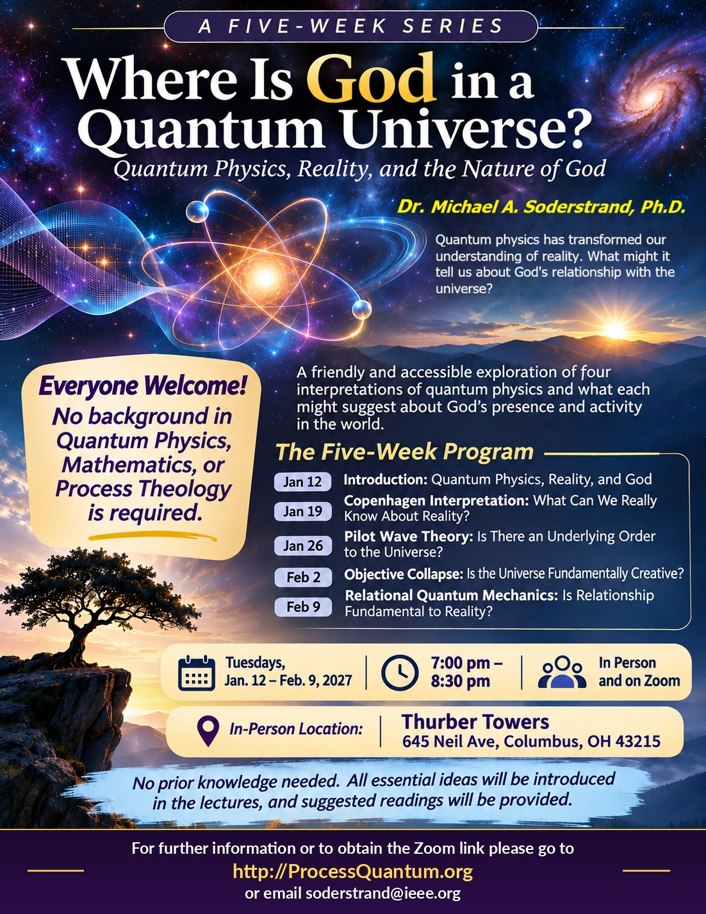
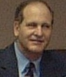

Welcome. This website brings together lecture series and educational materials exploring modern science, philosophy, and theology, with particular attention to quantum physics and Process Theology.
Quantum Physics, Reality, and the Nature of God
A five-week series examining four interpretations of quantum physics and exploring what each might suggest about God's presence and relationship with the world.
January 12 – February 9, 2027
Tuesdays, 7:00–8:30 p.m. · In person and via Zoom
Click the announcement to view it at full size, or download a copy.

An eight-lecture series exploring how Process Theology can provide a conceptual framework for understanding modern quantum physics.
June – August 2026
Explore the Summer 2026 Course and Materials
Dr. Michael A. Soderstrand received his B.S., M.S. and Ph.D. degrees in Electrical and Computer Engineering from the University of California, Davis, CA. He spent 10 years as a Member of the Technical Staff of Sandia Laboratories, Livermore, CA, 25 years as Professor of Electrical and Computer Engineering at University of California, Davis and 5 years as department head at Oklahoma State University, Stillwater, OK. He finished his career as an adjunct professor at DeVry University, Southern Nazarene University, The Catholic University of America and Towson University. He is now retired writing articles on Science and Theology.
Email: soderstrand@ieee.org
Website: http://UCDavis.tv